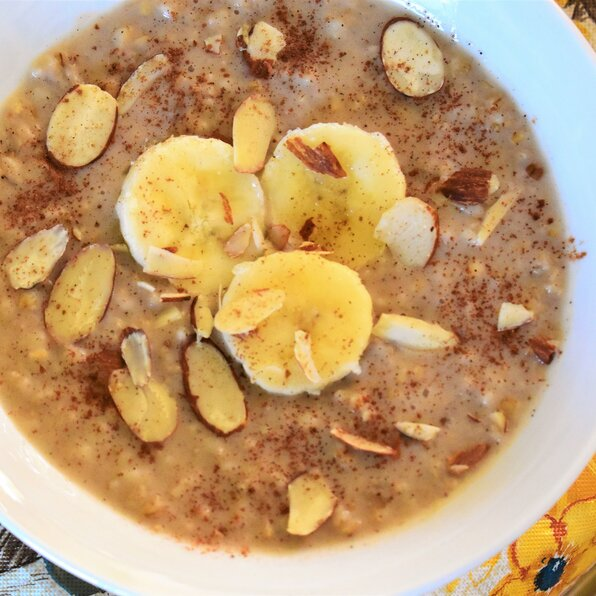

Home
Creamy Slow Cooker Steel-Cut Oats

Description
Wake up to a delicious and filling breakfast of creamy steel-cut oats, cooked in the slow cooker with cinnamon, brown sugar, and raisins.
Ingredients
-
4 cups water
-
2 cups steel cut oats
-
2 cups almond milk
-
½ cup brown sugar
-
½ cup raisins
-
1 cinnamon stick
Steps
-
Combine water, steel cut oats, almond milk, half-and-half, brown sugar, raisins, and cinnamon stick in a slow cooker; mix to combine.
-
Cook on Low until oats are soft, about 8 hours.